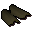
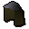

Leather
| Config name | leather |
| Item id | 1741 |
| Weight | 5lb |
| Members | No |
| Tradeable | Yes |
| Stackable | No |
| Defined in | scripts/skill_crafting/configs/leather/hides.obj |
Leather
It's a piece of leather.
Made by  Leatherworker from
Leatherworker from  Cow hide for 1 gp.
Cow hide for 1 gp.
Made by  Tanner from
Tanner from  Cow hide for 1 gp.
Cow hide for 1 gp.
Made by  Sbott from
Sbott from  Cow hide for 2 gp.
Cow hide for 2 gp.
Used to make
| Skill | Level | XP | Ingredients | Tool | How | Where | Makes |
|---|---|---|---|---|---|---|---|
| Crafting | 1 | 13.8 | interface | ||||
| Crafting | 7 | 16.3 | interface | ||||
| Crafting | 9 | 18.5 | interface | ||||
| Crafting | 11 | 22.0 | interface |  Leather vambraces | |||
| Crafting | 14 | 25.0 | interface | ||||
| Crafting | 18 | 27.0 | interface | ||||
| Crafting | 38 | 37.0 | interface |  Coifmembers |
Quests
Referenced in scripts
scripts/areas/area_alkharid/scripts/tanner.rs2scripts/areas/area_canifis/scripts/sbott.rs2scripts/minigames/game_ranging/scripts/armour_salesman.rs2scripts/minigames/game_ranging/scripts/leatherworker.rs2scripts/quests/quest_elemental_workshop/scripts/elemental_workshop_journal.rs2scripts/quests/quest_elemental_workshop/scripts/elemental_workshop_shield_book.rs2scripts/quests/quest_elemental_workshop/scripts/quest_elemental_workshop.rs2scripts/quests/quest_itexam/scripts/area_digsite.rs2scripts/quests/quest_itexam/scripts/digsite_workman.rs2scripts/skill_crafting/scripts/leather/leather.rs2scripts/skill_fishing/scripts/fishing_spots/memberfish.rs2